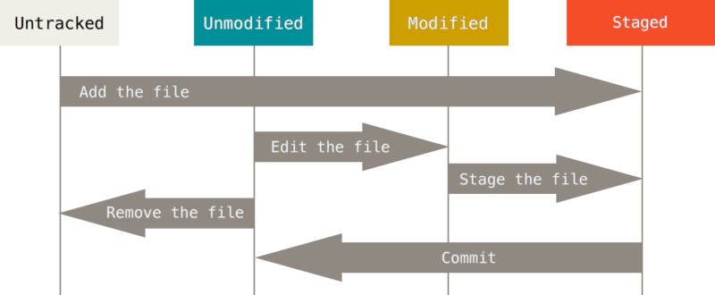
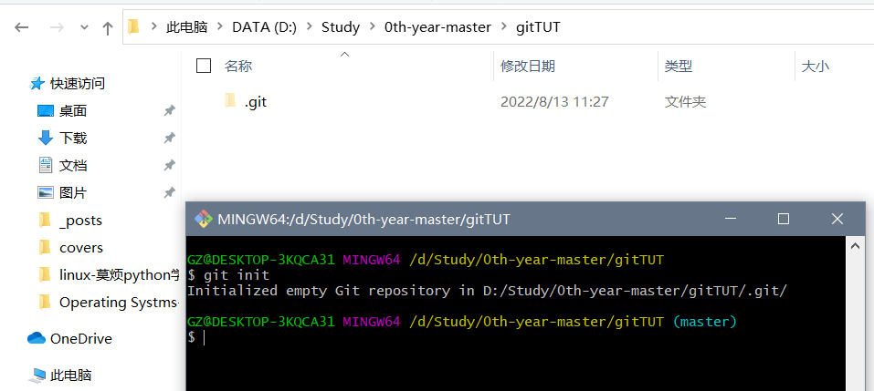
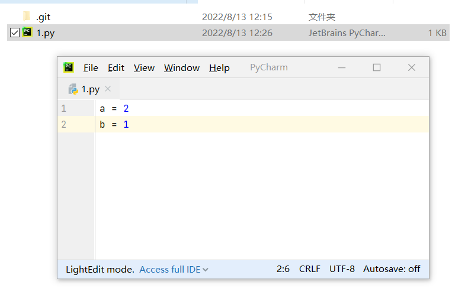
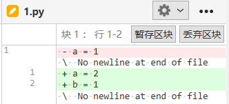
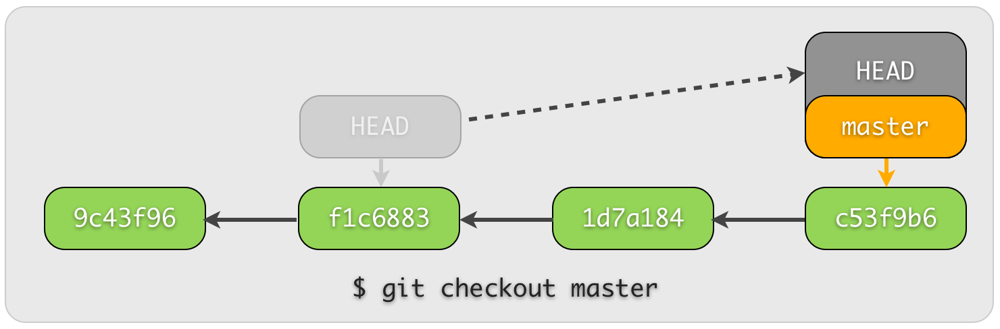
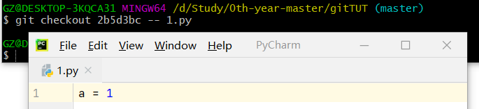

官网
Git 版本管理 教程系列 | 莫烦 Python (yulizi123.github.io)
课程
Git 安装
Ubuntu:
sudo apt-get install git-all查看用户名和用户邮箱
用户名:
$ git config user.name
metal-cell用户邮箱:
$ git config user.email
XXX@qq.comGit 流程图
{kind=link}

Untracked: 未跟踪Unmodified: 未修改Modified: 修改过Staged: 暂存
创建/修改 版本库
$ git init
Initialized empty Git repository in D:/Study/0th-year-master/gitTUT/.git/{kind=link}

新建一个1.py文件

git status 查看版本库的状态
$ git status
On branch master
No commits yet
Untracked files:
(use "git add <file>..." to include in what will be committed)
1.py
nothing added to commit but untracked files present (use "git add" to track)
git add 添加进版本库
现在1.py并没有被放入版本库中(Unstaged), 所以我们要使用add把它添加进版本库(staged):
$ git add 1.py{kind=link}
$ git status
On branch master
No commits yet
Changes to be committed:
(use "git rm --cached <file>..." to unstage)
new file: 1.pygit add .一次性添加文件夹中所有未被添加的文件
$ git .git commit 提交改变
$ git commit -m "create 1.py"
[master (root-commit) 3520206] create 1.py
1 file changed, 0 insertions(+), 0 deletions(-)
create mode 100644 1.py
记录修改(log & diff)
修改记录 log
$ git log
commit XXX (HEAD -> master)
Author: XXX <XXX@qq.com>
Date: Sat Aug 13 11:53:09 2022 +0800
create 1.py我们对1.py文件进行一次修改:

然后我们就能在status中看到修改还没被提交的信息了
$ git status
On branch master
Changes not staged for commit:
(use "git add <file>..." to update what will be committed)
(use "git checkout -- <file>..." to discard changes in working directory)
modified: 1.py
no changes added to commit (use "git add" and/or "git commit -a")把这次修改添加(add)到可被提交的(commit)的状态, 然后再提交(commit)这次的修改:
$ git add 1.py
$ git commit -m "change 1"
[master 2b5d3bc] change 1
1 file changed, 1 insertion(+)
再次查看 log, 现在我们就能看到 create 1.py 和 change 1 这两条修改信息了. 而且做出这两条 commit 的 ID, 修改的 Author, 修改 Date 也被显示在上面.
$ git log
commit XXX (HEAD -> master)
Author: XXX <XXX@qq.com>
Date: Sat Aug 13 12:15:33 2022 +0800
change 1
commit XXXX
Author: XXX <XXX@qq.com>
Date: Sat Aug 13 11:53:09 2022 +0800
create 1.py如果删除一部分代码, 也会被记录上, 比如把 a = 1 改成 a = 2, 再添加一个 b = 1.
{kind=link}

查看 unstaged
$ git diff
diff --git a/1.py b/1.py
index d25d49e..61ce15f 100644
--- a/1.py
+++ b/1.py
@@ -1 +1,2 @@
-a = 1
\ No newline at end of file
+a = 2
+b = 1
\ No newline at end of file{kind=link}

查看 staged (--cached)
如果想要查看这次还没 add (unstaged) 的修改部分 和上个已经 commit 的文件有何不同, 我们将使用 $ git diff:
$ git add .
diff --git a/1.py b/1.py
index d25d49e..61ce15f 100644
--- a/1.py
+++ b/1.py
@@ -1 +1,2 @@
-a = 1
\ No newline at end of file
+a = 2
+b = 1
\ No newline at end of file查看 staged & unstaged (HEAD)
还有种方法让我们可以查看 add 过 (staged) 和 没 add (unstaged) 的修改, 比如我们再修改一下 1.py 但不 add:


# 对比三种不同的 diff 形式
$ git diff HEAD # staged & unstaged
diff --git a/1.py b/1.py
index d25d49e..ac13cf6 100644
--- a/1.py
+++ b/1.py
@@ -1 +1,3 @@
-a = 1
\ No newline at end of file
+a = 2
+b = 1
+c = b
\ No newline at end of file$ git diff # unstaged
diff --git a/1.py b/1.py
index 61ce15f..ac13cf6 100644
--- a/1.py
+++ b/1.py
@@ -1,2 +1,3 @@
a = 2
-b = 1
\ No newline at end of file
+b = 1
+c = b
\ No newline at end of file$ git diff --cached # staged
diff --git a/1.py b/1.py
index d25d49e..61ce15f 100644
--- a/1.py
+++ b/1.py
@@ -1 +1,2 @@
-a = 1
\ No newline at end of file
+a = 2
+b = 1
\ No newline at end of file为了下节内容, 我们保持这次修改, 全部
add变成staged状态, 并commit.
$ git add .
$ git commit -m "change 2"
[master 8f0a599] change 2
1 file changed, 3 insertions(+), 1 deletion(-)
回到从前
修改已 commit 的版本
有时候我们总会忘了什么, 比如已经提交了 commit 却发现在这个 commit 中忘了附上另一个文件. 接下来我们模拟这种情况. 上节内容中, 我们最后一个 commit 是 change 2, 我们将要添加另外一个文件, 将这个修改也 commit 进 change 2. 所以我们复制 1.py 这个文件, 改名为 2.py. 并把 2.py 变成 staged, 然后使用 --amend 将这次改变合并到之前的 change 2 中.

$ git add 2.py
$ git commit --amend --no-edit
[master dc47039] change 2
Date: Sat Aug 13 12:41:55 2022 +0800
2 files changed, 6 insertions(+), 1 deletion(-)
create mode 100644 2.py--no-edit: 不编辑, 直接合并到上一个 commit
$ git log --oneline
dc47039 (HEAD -> master) change 2
2b5d3bc change 1
3520206 create 1.pyreset 回到 add 之前
有时我们添加 add 了修改, 但是又后悔, 并想补充一些内容再 add. 这时, 我们有一种方式可以回到 add 之前. 比如在 1.py 文件中添加这一行:

然后 add 去 staged 再返回到 add 之前:
$ git add 1.py
$ git status -s
M 1.py
$ git reset 1.py
Unstaged changes after reset:
M 1.py
$ git status -s
M 1.py
reset 回到 commit 之前
{kind=link}

每个 commit 都有自己的 id 数字号, HEAD 是一个指针, 指引当前的状态是在哪个 commit. 最近的一次 commit 在最右边, 我们如果要回到过去, 就是让 HEAD 回到过去并 reset 此时的 HEAD 到过去的位置.
$ git reset --hard HEAD
HEAD is now at dc47039 change 2查看所有的 log:
$ git log --oneline
dc47039 (HEAD -> master) change 2
2b5d3bc change 1
3520206 create 1.py回到 2b5d3bc change 1:
$ git reset --hard HEAD^
HEAD is now at 2b5d3bc change 1
使用commit id:
$ git reset --hard 2b5d3bc
HEAD is now at 2b5d3bc change 1"回到未来" , 挽救消失的change2
git reflog 查看所有改动
$ git reflog
2b5d3bc (HEAD -> master) HEAD@{0}: reset: moving to 2b5d3bc
2b5d3bc (HEAD -> master) HEAD@{1}: reset: moving to HEAD^
dc47039 HEAD@{2}: reset: moving to HEAD
dc47039 HEAD@{3}: commit (amend): change 2
8f0a599 HEAD@{4}: commit: change 2
2b5d3bc (HEAD -> master) HEAD@{5}: commit: change 1
3520206 HEAD@{6}: commit (initial): create 1.py回到change 2:
$ git reset --hard dc47039
HEAD is now at dc47039 change 2
回到从前(checkout 针对单个文件)
$ git log --oneline
dc47039 (HEAD -> master) change 2
2b5d3bc change 1
3520206 create 1.pycheckout回change 1:
$ git checkout 2b5d3bc -- 1.py{kind=link}

我们在 1.py 加上一行内容 # I went back to change 1 然后 add 并 commit 1.py:

可以看出, 不像 reset 时那样, 我们的 change 2 并没有消失, 但是 1.py 却已经回去了过去, 并改写了未来.